| Approach | bw | estimate | std.error | p.value |
|---|---|---|---|---|
| Baseline | -1.73 | 0.747 | 0.0204 | |
| Local randomization | 5 | 1.54 | 1.179 | 0.1924 |
| Local randomization | 10 | 1.37 | 0.836 | 0.1013 |
| Continuity | 17.2 | 3.02 | 1.427 | 0.0344 |
Quasi-Experiments
POLI SCI 210
Introduction to Empirical Methods in Political Science
AI Prompts
Quasi-experiment (vs. natural experiment)
Regression discontinuity
Difference-in-differences
Political science applications of these designs
Robust standard errors
Clustered standard errors
So far
Two weeks ago: Experiments as a framework to think about causal inference (potential outcomes)
Last week: Regression as a flexible method to estimate conditional means/slopes
- This week:

Strategies for causal inference
Strategy 1: Random assignment
Strategy 2: Ignorability assumption (conditional independence)
Ignorability is hard to justify:
- Need to account for all relevant confounding variables
- Should not include more than 2-3 controls in regression
Roadmap
Quasi-experiments as research designs for credible causal inference in observational studies
Tuesday: Ignorability satisfied by design (regression discontinuity)
Thursday: Replace ignorability with a more plausible assumption (difference-in-differences)
Quasi-experiments
Observational studies
Conditions (treatment, control) assigned in a manner that is sufficiently independent from potential outcomes
Enough to satisfly ignorability or conditional independence
\(\neq\) Natural experiments (no random assignment)
We can think of them as experiments but they are not
Regression discontinuity design (RDD)
Ingredients
\(Y\): Outcome
\(X\): Score or running variable (numerical continuous)
\(c\): Cutoff or threshold
\(T\): Treatment indicator (1, 0)
Potential outcomes
\[ Y = (1 - T) Y(0) + T Y(1) = \begin{cases} Y(0) & \text{if } X < c\\ Y(1) & \text{if } X \geq c \end{cases} \]
Sharp RDD
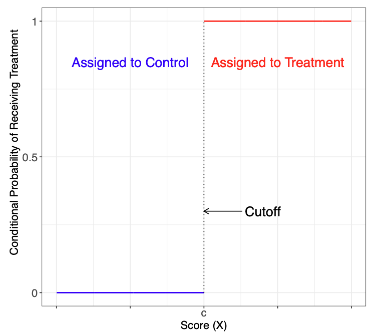
Interpretation: Two approaches
Local randomization
Continuity-based
Local randomization approach
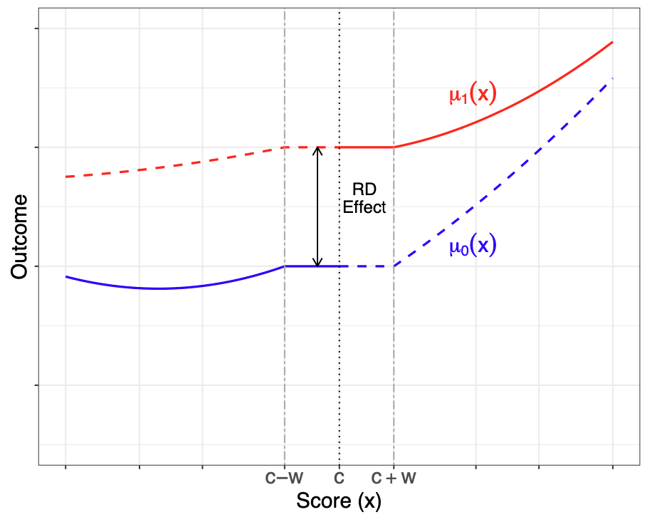
Potential outcomes are not random because they depend on the score
But around the cutoff, treatment assignment is as-if random
We can pretend we have an experiment within a bandwidth around the cutoff
Example
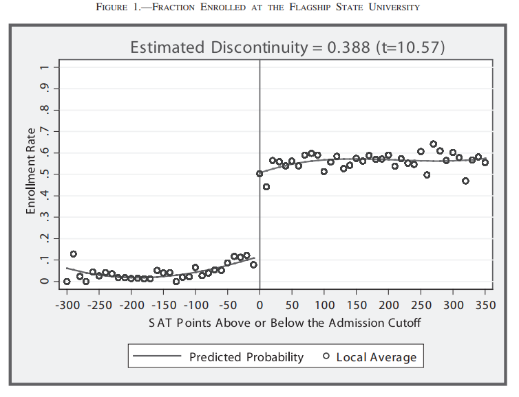
Local randomization approach
Bandwidth \(\mathcal{W} = [c−w,c+w]\)
Treatment as-if random within \(\mathcal{W}\)
ATE identified within \(\mathcal{W}\)
Local randomization approach
Requirements
Known probability distribution of scores within \(\mathcal{W}\) (\(\equiv\) random assignment)
Potential outcomes not affected by scores within \(\mathcal{W}\)
Local randomization approach
Estimation
- Difference in means within \(\mathcal{W}\)
Inference
CLT approximation (needs a super-population)
Simulation (randomization inference)
Challenge: choosing a bandwidth
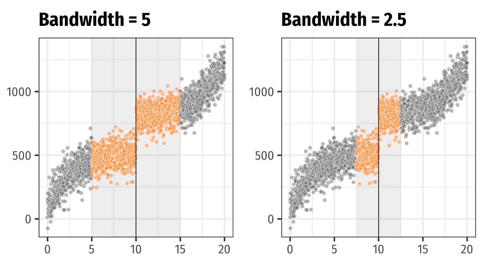
Continuity-based approach
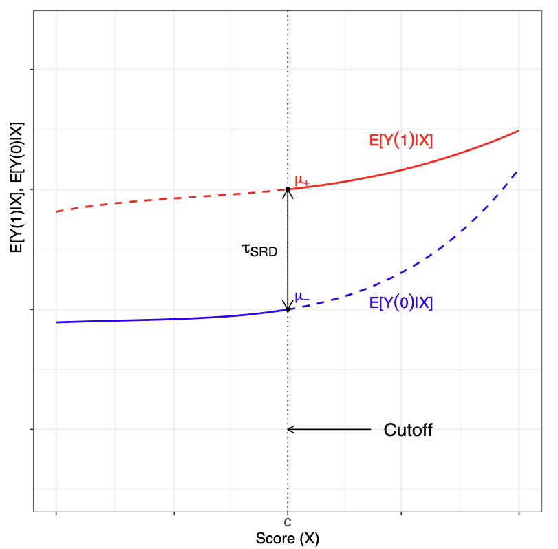
Treatment assignment deterministic at cutoff
ATE identified exactly at cutoff
\(\tau_{SRD} \equiv E[Y_i(1) - Y_i(0) | X_i = c]\)
But it does not exist!
Example: Evanston school district
Continuity-based approach
ATE is identified but nonexistent at cutoff
Still, we can approximate gap
Continuity-based approach
ATE is identified but nonexistent at cutoff
Still, we can approximate gap
\[ \lim_{x \downarrow c} E[Y | X = x] - \lim_{x \uparrow c} E[Y | X = x] \]
Continuity-based approach
ATE is identified but nonexistent at cutoff
Still, we can approximate gap
\[ \lim_{x \downarrow c} E[Y | X = x] - \lim_{x \uparrow c} E[Y | X = x] \]
- This becomes a line-drawing problem
Local polynomial point estimation
Steps
Choose polynomial \(p\)
Choose kernel function \(K(\cdot)\)
Choose bandwidth \(h\)
Fit \(\widehat \mu_+\) and \(\widehat \mu_-\) via weighted least-squares
Estimate: \(\widehat{ATE} = \widehat \mu_+ - \widehat \mu_-\)
Inference: Correct for adaptive bandwidth selection
Line drawing: Parametric
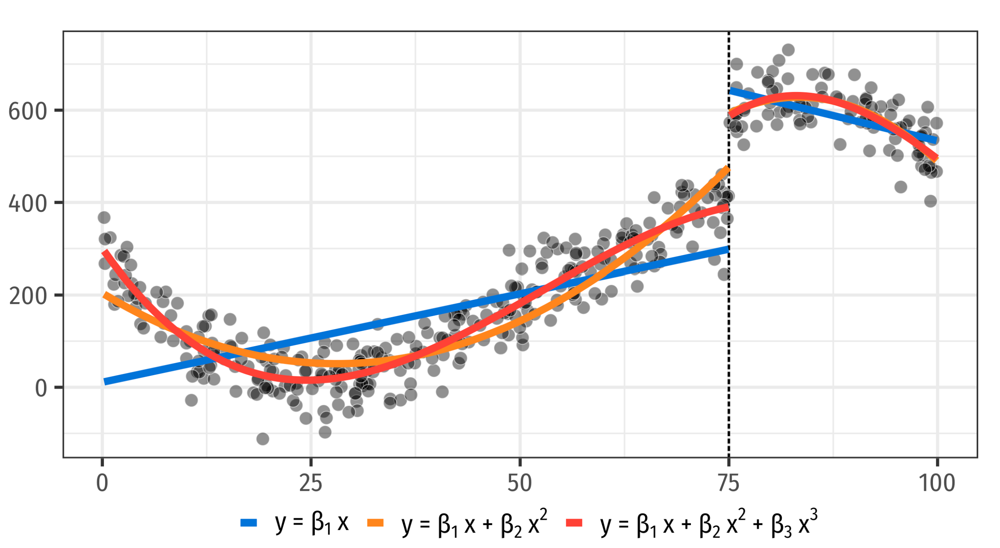
Line drawing: Nonparametric
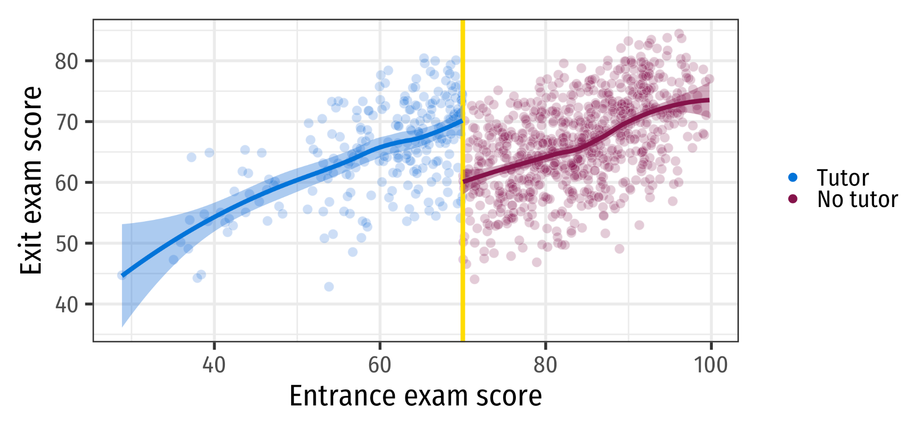
Line drawing: Bandwidth
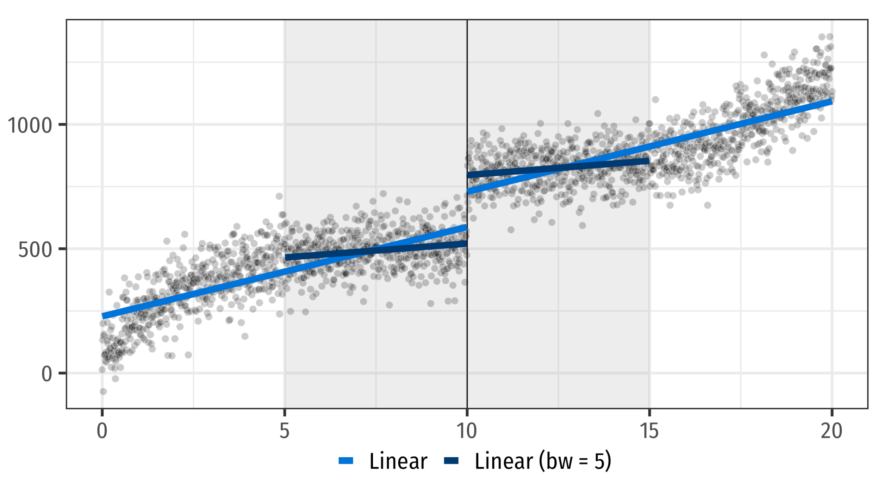
Practice
Ingredients
\(Y\): Percentage of young women who had completed high school by 2000 (outcome)
\(X`\): Islamic parties’ margin of victory in the 1994 mayoral election (score)
\(c\): Implicit in score being centered at 0
\(T\): Whether a mayor from an Islamic party was elected in the 1994 election (treatment)
Visualize
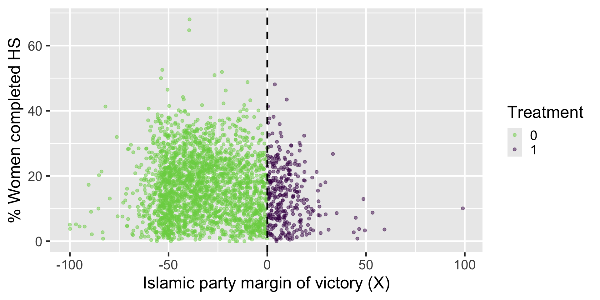Visualize
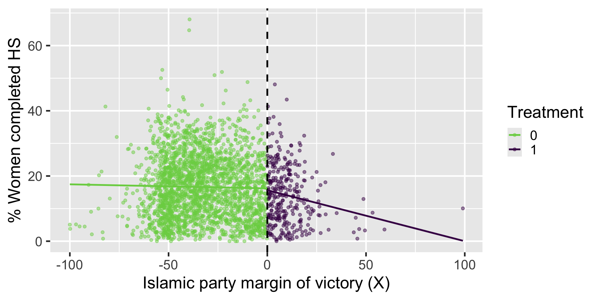Bin observations
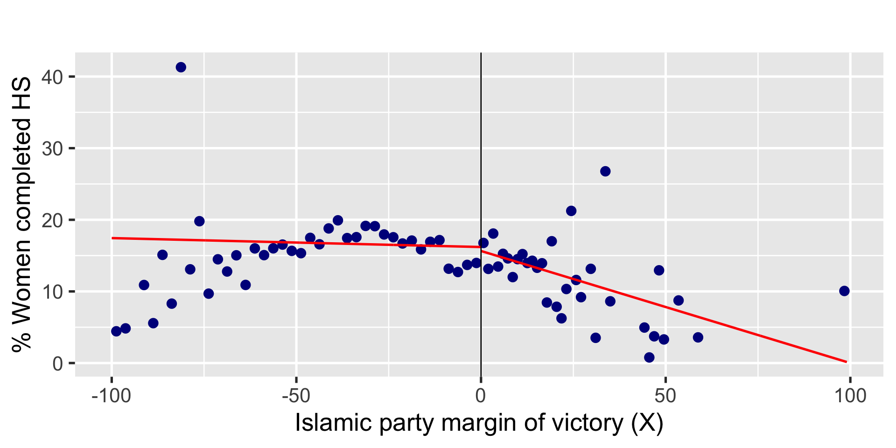Models
OLS baseline: \(\widehat Y = \beta_0 + \beta_1 T + \beta_2 X\)
Local randomization: 5% and 10% bandwidth
Continuity-based: Default automation
Results
Results
| Approach | bw | estimate | std.error | p.value |
|---|---|---|---|---|
| Baseline | -1.73 | 0.747 | 0.0204 | |
| Local randomization | 5 | 1.54 | 1.179 | 0.1924 |
| Local randomization | 10 | 1.37 | 0.836 | 0.1013 |
| Continuity | 17.2 | 3.02 | 1.427 | 0.0344 |
Results
| Approach | bw | estimate | std.error | p.value |
|---|---|---|---|---|
| Baseline | -1.73 | 0.747 | 0.0204 | |
| Local randomization | 5 | 1.54 | 1.179 | 0.1924 |
| Local randomization | 10 | 1.37 | 0.836 | 0.1013 |
| Continuity | 17.2 | 3.02 | 1.427 | 0.0344 |
Results
| Approach | bw | estimate | std.error | p.value |
|---|---|---|---|---|
| Baseline | -1.73 | 0.747 | 0.0204 | |
| Local randomization | 5 | 1.54 | 1.179 | 0.1924 |
| Local randomization | 10 | 1.37 | 0.836 | 0.1013 |
| Continuity | 17.2 | 3.02 | 1.427 | 0.0344 |
Results
| Approach | bw | estimate | std.error | p.value |
|---|---|---|---|---|
| Baseline | -1.73 | 0.747 | 0.0204 | |
| Local randomization | 5 | 1.54 | 1.179 | 0.1924 |
| Local randomization | 10 | 1.37 | 0.836 | 0.1013 |
| Continuity | 17.2 | 3.02 | 1.427 | 0.0344 |
Summary
RDD as a credible way to justify ignorability assumption
Because local randomization and continuity-based approach
Effects are causal but local
Do they apply to other cases?
Do they exist beyond the discontinuity?
Quasi-experiments
POLI SCI 210
Introduction to Empirical Methods in Political Science
Last time
RDD as an example of how to justify ignorability by design
But it is a very specific design!
Today: Take advantage of before/after comparisons to circumvent ignorability assumption
Difference-in-differences design
Example
King of the Pump
How did John Snow prove that it was the water?
Before/after comparison (1849-1854)
In between: Lambeth water company forced to move upstream (away from dirty water)
Results
| Cholera deaths per 10,000 | ||
|---|---|---|
| Supplier | 1849 | 1854 |
| Lambeth (dirty to clean) | 85 | 19 |
| Others (dirty to dirty) | 135 | 147 |
Results
| Cholera deaths per 10,000 | ||
|---|---|---|
| Supplier | 1849 | 1854 |
| Lambeth (dirty to clean) | 85 | 19 |
| Others (dirty to dirty) | 135 | 147 |
Results
| Cholera deaths per 10,000 | ||
|---|---|---|
| Supplier | 1849 | 1854 |
| Lambeth (dirty to clean) | 85 | 19 |
| Others (dirty to dirty) | 135 | 147 |
Moving away from the certainly helped!
Another example
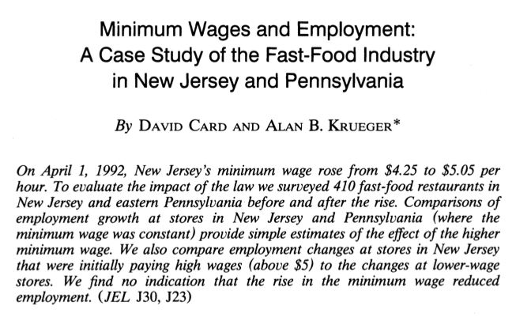
Minimum wage and employment
Agreement: Increasing minimum wage reduces employment
New Jersey 1992: $4.25 \(\rightarrow\) $5.05
Pennsylvania: Stay at $4.25
Look at full time employment (FTE) in fast food restaurants
Compare February-November 1992
Results
| Variable | PA | NJ | NJ-PA |
|---|---|---|---|
| FTE before | 23.300 | 20.44 | -2.89 |
| FTE after | 21.147 | 21.03 | -0.14 |
| Change | -2.160 | 0.59 | 2.76 |
Results
| Variable | PA | NJ | NJ-PA |
|---|---|---|---|
| FTE before | 23.300 | 20.44 | -2.89 |
| FTE after | 21.147 | 21.03 | -0.14 |
| Change | -2.160 | 0.59 | 2.76 |
Results
| Variable | PA | NJ | NJ-PA |
|---|---|---|---|
| FTE before | 23.300 | 20.44 | -2.89 |
| FTE after | 21.147 | 21.03 | -0.14 |
| Change | -2.160 | 0.59 | 2.76 |
Results
| Variable | PA | NJ | NJ-PA |
|---|---|---|---|
| FTE before | 23.300 | 20.44 | -2.89 |
| FTE after | 21.147 | 21.03 | -0.14 |
| Change | -2.160 | 0.59 | 2.76 |
Increasing minimum waged created more jobs in NJ!
Difference-in-differences design
Time periods: \(t = \{1,2\}\) (Before/after treatment)
Treatment: \(D_i = \{0,1\}\)
Potential outcomes: \(Y_{i,t}(0) = Y_{i,t}(0, 0)\) and \(Y_{i,t}(1) = Y_{i,t}(0, 1)\)
Switching equation
\[ Y_{i,t} = D_i Y_{i,t}(1) + (1-D_i) Y_{i,t}(0) \]
Target quantity
Average treated effect on the treated (ATT) in \(t=2\)
\[ \tau_2 = E[Y_{i,2}(1) - Y_{i,2}(0) | D_i = 1] \]
Cannot observe directly
Cannot avoid selection bias
But before/after setup allows for credible estimation
Target quantity
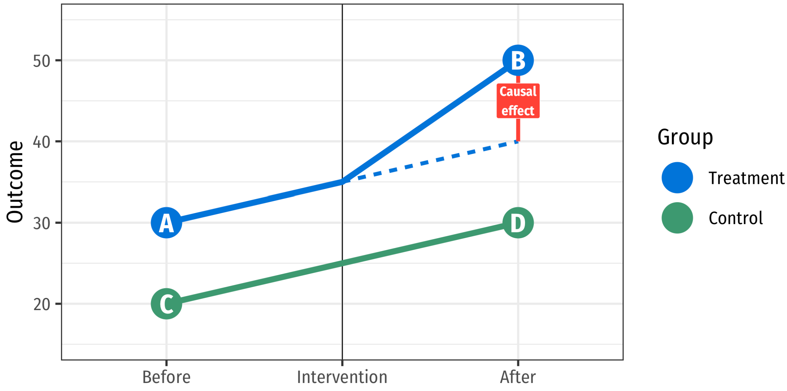DID estimation
\[ \widehat{ATT} = [\text{Mean}(B) - \text{Mean}(A)] - [\text{Mean}(D) - \text{Mean}(C)] \]
DID estimation
\[ \widehat{ATT} = \underbrace{[\text{Mean}(B) - \text{Mean}(A)]}_\text{Difference} - \underbrace{[\text{Mean}(D) - \text{Mean}(C)]}_\text{Difference} \]
DID estimation
\[ \widehat{ATT} = \underbrace{\underbrace{[\text{Mean}(B) - \text{Mean}(A)]}_\text{Difference} - \underbrace{[\text{Mean}(D) - \text{Mean}(C)]}_\text{Difference}}_\text{Difference-in-differences} \]
Rewrite as a regression
Two time periods
\[ \begin{align} Y = & \beta_0 + \beta_1 \text{Treated} + \beta_2 \text{Post-treatment} + \\ & {\color{purple}{\beta_3 \text{Treated} \times \text{Post-treatment}}} \end{align} \]
\(\beta_0\): Avg. control group, before treatment
\(\beta_0 + \beta_1\): Avg. treatment group, before treatment
\(\beta_0 + \beta_2\): Avg. control group, post-treatment
\(\beta_0 + \beta_1 + \beta_2 + \beta_3\): Avg. treatment group, post-treatment
\(\beta_3\) gives the difference-in-differences
Rewrite as a regression
Multiple time periods
\[ Y = \alpha_i + \alpha_t + \color{purple}{\beta_1 \text{Treated}} \]
\(\alpha_i\): Control for variation within units
\(\alpha_t\): Control for variation over time
\(\alpha_i\) and \(\alpha_t\) are called fixed-effects
This is a two-way fixed-effects estimator (TWFE)
Example with multiple periods
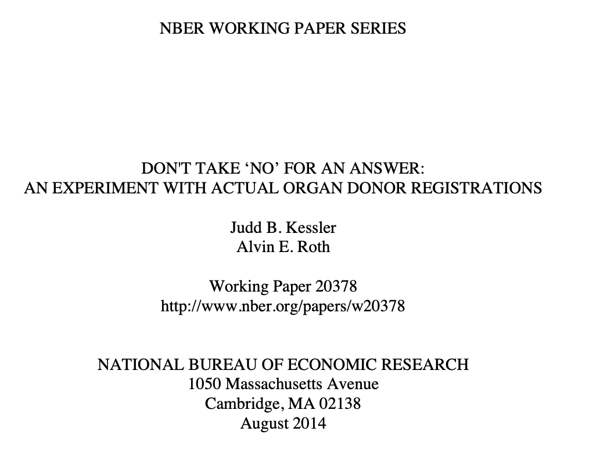Intervention
2011: California switches from opt-in \(\rightarrow\) active choice
Compare with states that remain opt-in (AZ, DC, MN, NH, TN, SC, SD, VA, WI)
Outcome: Average sign-up rates per quarter per state
Comparison over time
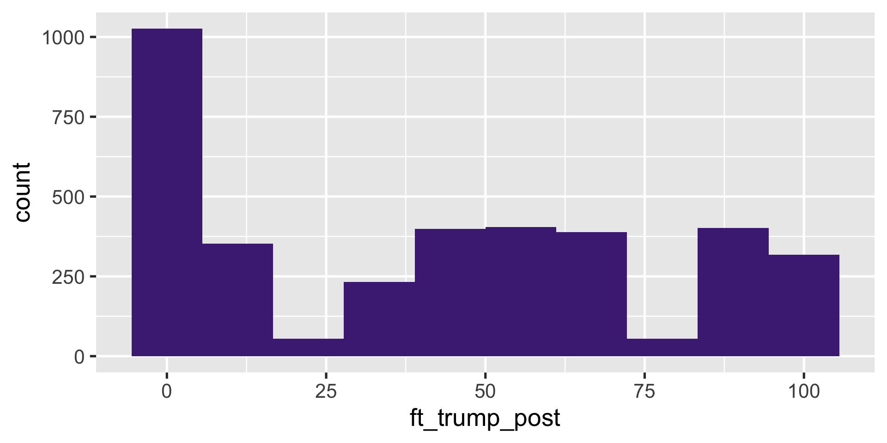
Models
Two-periods: \(\widehat{\texttt{rate}} = \beta_0 + \beta_1 \texttt{california} + \beta_2 \texttt{post} + \color{purple}{\beta_3 \texttt{california} \times \texttt{post}}\)
Two-wave fixed-effects: \(\widehat{\texttt{rate}} = \alpha_{\texttt{state}} + \alpha_{\texttt{quarter}} + \color{purple}{\beta_1 \texttt{treated}}\)
Models
Two-periods: \(\widehat{\texttt{rate}} = \beta_0 + \beta_1 \texttt{california} + \beta_2 \texttt{post} + \color{purple}{\beta_3 \texttt{california} \times \texttt{post}}\)
Two-wave fixed-effects: \(\widehat{\texttt{rate}} = \beta_0 + \color{purple}{ \beta_1 \texttt{california-post}} + \beta_2 \texttt{state} + \beta_3 \texttt{quarter}\)
Use clustered standard errors for statistical inference
Results
| Model | estimate | conf.low | conf.high | p.value |
|---|---|---|---|---|
| Two-periods (no clustering) | -0.0225 | -0.2699 | 0.225 | 0.857941 |
| Two-periods (clustered) | -0.0225 | -0.0349 | -0.0101 | 0.000986 |
| Two-way FE | -0.0225 | -0.0349 | -0.0101 | 0.000986 |
Results
| Model | estimate | conf.low | conf.high | p.value |
|---|---|---|---|---|
| Two-periods (no clustering) | -0.0225 | -0.2699 | 0.225 | 0.857941 |
| Two-periods (clustered) | -0.0225 | -0.0349 | -0.0101 | 0.000986 |
| Two-way FE | -0.0225 | -0.0349 | -0.0101 | 0.000986 |
Results
| Model | estimate | conf.low | conf.high | p.value |
|---|---|---|---|---|
| Two-periods (no clustering) | -0.0225 | -0.2699 | 0.225 | 0.857941 |
| Two-periods (clustered) | -0.0225 | -0.0349 | -0.0101 | 0.000986 |
| Two-way FE | -0.0225 | -0.0349 | -0.0101 | 0.000986 |
Results
| Model | estimate | conf.low | conf.high | p.value |
|---|---|---|---|---|
| Two-periods (no clustering) | -0.0225 | -0.2699 | 0.225 | 0.857941 |
| Two-periods (clustered) | -0.0225 | -0.0349 | -0.0101 | 0.000986 |
| Two-way FE | -0.0225 | -0.0349 | -0.0101 | 0.000986 |
These estimates are only valid under a BIG assumption
Assumption: Parallel trends
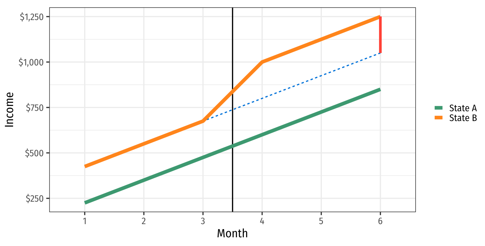What if we break parallel trends?
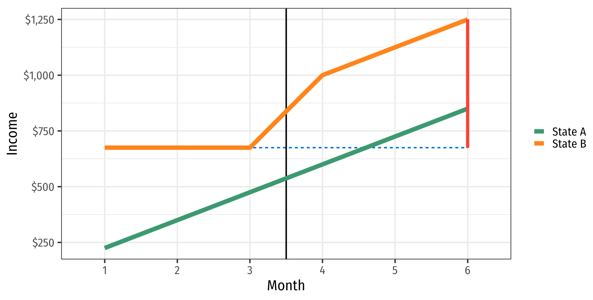What if we break parallel trends?
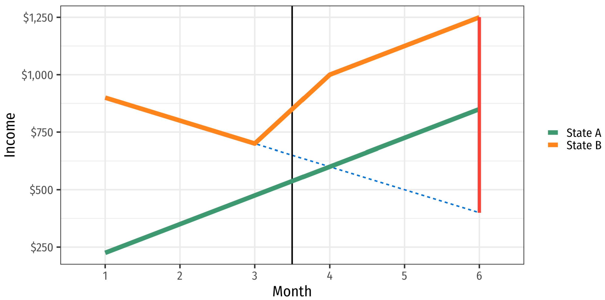Challenge: Staggered adoption
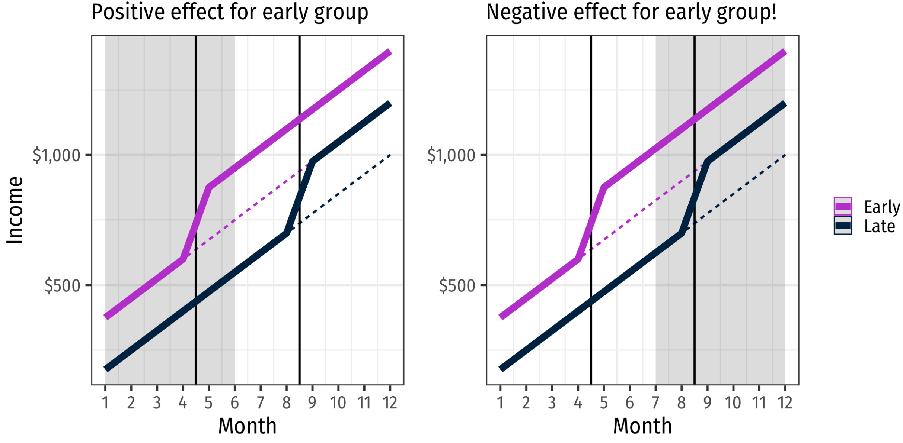Summary
Difference in difference leverages before-after comparisons between treatment and control group to tease out causal effects
Highly local: Focus on average treatment effect on the treated
Could always change the control group
Parallel trends assumption is very important!